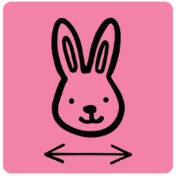

Ximena Urquizo · Analista de datos · Finanzas · Control de gestión
Soy Ximena.
Analizo los datos, estructuro la solución y la construyo con IA.
Casos reales, con datos ficticios. Ingeniera industrial · Especialización en análisis de datos.
WhatsApp +51 940 138 547 · ximenaurquizopon2508@gmail.com
Los datos, para entender el problema de verdad.
La solución: qué medir, qué mejorar y quién la va a usar.
La herramienta, y valido que funcione y cuadre.
- 10 días → al instante
- utilidad e IGV por obra
- 106 agencias
- en un dashboard de clima en Power BI
- 3 obras
- con inventario y alertas diarias
- 10 casos
- con ejemplos que puedes probar
Mi trabajo, en una vista
Nada vive por separado.
Mis casos comparten herramientas y una forma de trabajar. Toca un punto para explorarlo.
Trabajo seleccionado
¿Qué necesita decidir tu equipo?
Cada caso empieza con una pregunta de negocio. Ábrela para ver qué hice y probar un ejemplo con datos ficticios.
Una decisión que puedes probar
¿Cuánto IGV pagas de tu bolsillo?
Cada gasto sin factura es crédito fiscal que se pierde. Mueve cuánto del gasto de una obra tiene factura y mira cuánto IGV queda por pagar.
Obra ficticia. La misma lógica de mi dashboard de obras.
Herramientas hechas por mí
También construyo mis herramientas.
Cuando una tarea se repite, la convierto en una herramienta. Esta es mi app personal en Python.

DataMatch
Cruza dos Excel sin fórmulas, aunque los nombres no estén escritos igual.
- Encuentra sola la fila de encabezados
- Limpia nombres: tildes, comas, mayúsculas y orden
- Amarillo si se parece · rojo si no lo encuentra
Herramientas
Con qué trabajo.
No solo te lo digo: pruébalo. Cada pestaña es un ejemplo con datos ficticios.
Excel y Power Query
- Excel avanzado
- BUSCARX
- SI
- SUMAPRODUCTO
- Tablas dinámicas
- Power Query (Excel y Power BI)
BI y datos
- Power BI
- DAX
- Modelado de datos
- Google Sheets
- SQL (básico)
- Python: análisis de datos con pandas
- Streamlit
- Jupyter Notebook
Automatización e IA
- n8n
- Integración de IA vía API (Gemini)
- Extracción de datos con IA (OCR)
- Desarrollo asistido por IA
- Prompt engineering
- Google Apps Script
- HTML y JavaScript
Finanzas y procesos
- Flujo de caja
- EBITDA y EBIT
- IGV y detracciones
- Conciliaciones
- Costos y precios
- KPI
- Mapeo de procesos
- Manuales y checklists
Experiencia
Dónde lo he aplicado.
-
oct 2026 — actualidad
Administradora · Endore
Clínica de endocrinología. Trabajo de la mano con la gerencia: finanzas, farmacia, convenios y análisis de datos.
-
ago 2025 — actualidad
Grupo UP · Construcción
Soporte Financiero y de Sistemas (freelance, desde ago 2026). Antes, Practicante Pre Profesional en Gerencia General.
-
feb 2026 — ago 2026
Practicante profesional, Experiencia del Colaborador · Caja Trujillo
Dashboards y bases de datos de clima laboral para la certificación Great Place to Work.
-
Proyecto personal
DataMatch · App en Python
Cruce de bases de Excel con nombres escritos distinto.